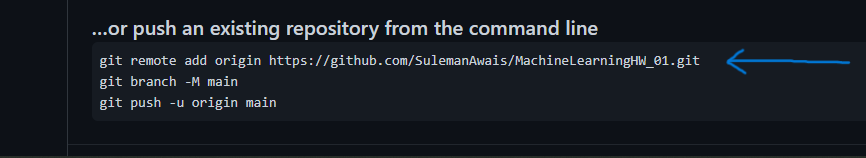
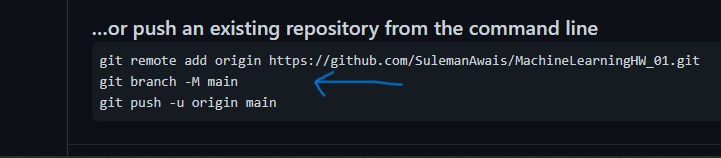
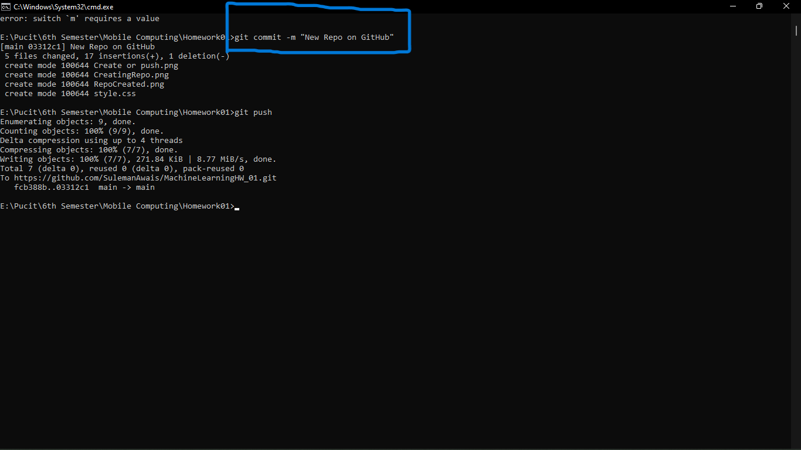
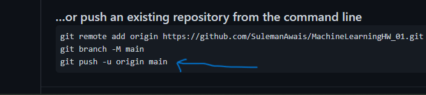

Click on the "+" icon at the top right of your account and click on the "New Repository" option to craete a new repo.

Now you can can give a name to your repository and set some discriptions to complete the creation process.
Click on "Create Repository" button
Repository Created successfully
Here we can either create a new repo on command line or we can push an existing one. For both cases you need to run these commands given.
Copy this command and run in the command line that you opened
After this copy the command below the previous one and run in the same way
Now you can add any commit to your code.For this use the command given bellow
git commit -m "Commit Description"
run this command just like in the snapshot
Then copy this command and run this on the command line to push your code
